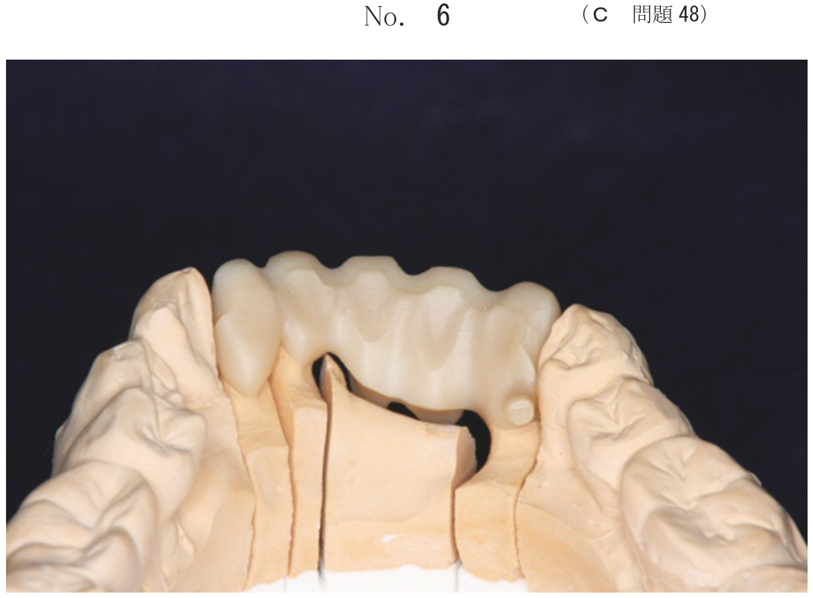
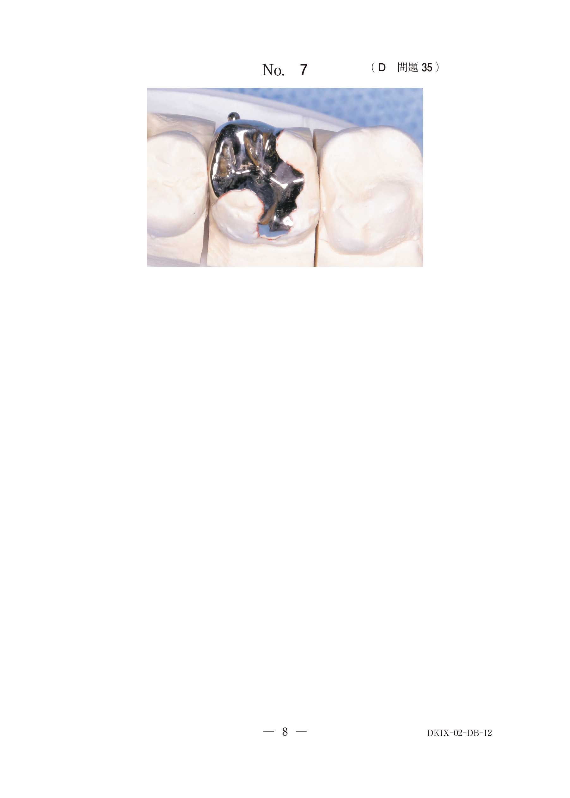
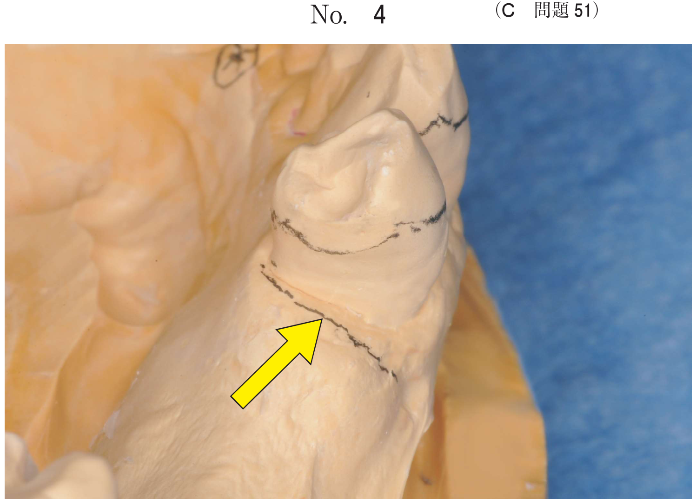

全部床義歯製作において、口腔内の解剖学的指標は義歯設計・人工歯排列の基準として重要である。
切歯乳頭は上顎前歯部の排列位置を決定する際の重要な指標である。
| 設定項目 | 基準 |
|---|---|
| 正中線 | 切歯乳頭の中央 |
| 咬合平面 | 切歯乳頭中央点とハミュラーノッチを基準（HIP平面） |
| 中切歯の排列位置 | 切歯乳頭より約8〜10mm前方 |
レトロモラーパッドは下顎臼後部に位置する粘膜組織で、義歯製作の重要な指標となる。
| 設定項目 | 基準 |
|---|---|
| 咬合平面 | レトロモラーパッドの中央〜下1/3 |
| 義歯床後縁 | レトロモラーパッドの1/2〜2/3を被覆 |
| 臼歯部人工歯の排列位置 | パウンドラインを参考に |
レトロモラーパッドの舌側面と下顎犬歯の近心隅角を結んだ線。下顎臼歯舌側面がこのラインより舌側に位置すると舌房が侵害される。
顎堤が高度に吸収している場合、通常の義歯設計では維持・安定が困難となる。
注意：高度吸収顎堤では解剖学的人工臼歯の選択や調節彎曲の強い排列は不適。
下顎全部床義歯製作中である。初診時の口腔内写真（別冊No.10）を別に示す。丸印で示す部位を利用して設定するのはどれか。すべて選べ。

【解説】丸印はレトロモラーパッド。咬合平面（中央〜下1/3）、義歯床後縁（1/2〜2/3被覆）、臼歯部人工歯排列位置の設定に利用する。S字状隆起は上顎、ポストダムは上顎義歯床後縁部。
無歯顎患者の作業用模型の写真（別冊No.12）を別に示す。矢印で示す解剖学的指標を用いて設定するのはどれか。3つ選べ。

【解説】矢印は切歯乳頭。正中線（切歯乳頭の中央）、咬合平面（HIP平面の前方基準）、中切歯の排列位置（約8〜10mm前方）の設定に利用する。歯槽頂線・口唇接合線は切歯乳頭とは無関係。
形態の異なる2つの下顎顎堤の写真（別冊No.8A、B）を別に示す。義歯製作にあたり、8Aと比較して8Bで考慮すべきなのはどれか。2つ選べ。

【解説】8Bは高度吸収顎堤。軟質裏装材の適用と筋圧中立帯（ニュートラルゾーン）への排列が有効。高度吸収顎堤では機能的（非解剖学的）人工歯を選択し、咬合様式は両側性平衡咬合が適する。